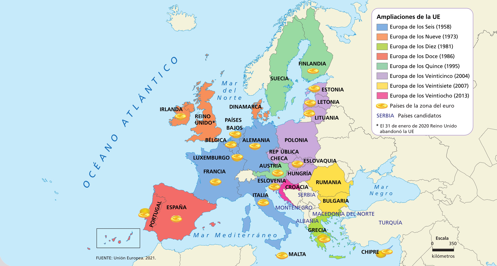

Cómo se formó, país a país, y cómo funcionan de verdad sus siete instituciones.
Una unión de 27 países europeos que ceden parte de sus decisiones a instituciones comunes para funcionar como un solo mercado, tener las mismas normas básicas y hablar con una sola voz en el mundo, sin dejar de ser países independientes. No es solo un acuerdo comercial: tiene sus propias leyes, su propio tribunal, su propia moneda y su propio Parlamento elegido por la ciudadanía.
Nació tras la Segunda Guerra Mundial con una idea muy concreta: si Francia y Alemania comparten el control del carbón y el acero (las materias primas de las armas de la época), será mucho más difícil que vuelvan a hacerse la guerra. Esa idea, propuesta por el ministro francés Robert Schuman el 9 de mayo de 1950 (con el apoyo del alemán Konrad Adenauer y el impulso técnico de Jean Monnet), es el origen de todo lo demás. Por eso el 9 de mayo es el "Día de Europa" y por eso, en 2012, la UE recibió el Premio Nobel de la Paz: por seis décadas contribuyendo a la reconciliación, la democracia y los derechos humanos en el continente.
El corazón económico de la UE son cuatro libertades de circulación, en vigor desde 1993: libre circulación de mercancías (sin aranceles entre países miembros), de servicios (una empresa de un país puede operar en otro), de capitales (invertir o mover dinero sin trabas) y de personas (vivir, estudiar y trabajar en cualquier país miembro sin necesitar un permiso especial). Es lo que hace posible, por ejemplo, que un estudiante español haga un Erasmus en Italia sin visado, o que una empresa alemana venda coches en Portugal sin pagar aduana.
No tiene ejército único, ni un presidente que gobierne a todos, ni sustituye a los gobiernos nacionales. Cada país conserva su Constitución, su gobierno, su sistema educativo y sanitario, y decide sobre buena parte de sus impuestos. La UE solo tiene poder en aquello que los propios países han decidido gestionar en común mediante los tratados (comercio, competencia, moneda en la eurozona, fronteras exteriores, medio ambiente, entre otros): es lo que se llama "cesión de soberanía", y es siempre voluntaria y reversible (como demostró el Brexit).
Las nueve etapas de ampliación, de los seis fundadores a los veintisiete de hoy. Junto a la línea del tiempo, el mapa oficial para verlo de un vistazo.

Fuente: Unión Europea, 2021. Pulsa la imagen o el botón para verla a pantalla completa.
Hay países europeos que nunca han sido ni quieren ser miembros de la UE (Noruega, Suiza, Reino Unido desde 2020...) y usan otras fórmulas de relación (mercado único sin voto, acuerdos bilaterales). Pertenecer a Europa como continente no significa pertenecer a la Unión Europea como organización.
Ninguna institución puede actuar sola: el poder está repartido a propósito, para que sea muy difícil que la UE se convierta en un "superestado" centralizado.
Sigue las flechas: la ciudadanía y los gobiernos nacionales son el origen de todo el poder de la UE.
Aunque cada eurodiputado se elige en su propio país, en Estrasburgo no se sientan por nacionalidad, sino por ideología: conservadores, socialdemócratas, liberales, verdes, izquierda, y varias familias de la derecha y la extrema derecha forman sus propios grupos políticos europeos, agrupando a partidos afines de distintos países. Para formar un grupo hacen falta al menos 23 eurodiputados de al menos una cuarta parte de los países (7 de 27).
Un reglamento o una directiva europea no los aprueba una sola institución: tienen que ponerse de acuerdo dos cámaras distintas, a partir de una propuesta que solo puede presentar la Comisión. Es el llamado "procedimiento legislativo ordinario", y con él se aprueba la inmensa mayoría de la legislación europea.
En la práctica, Parlamento y Consejo suelen negociar directamente con la Comisión en reuniones informales llamadas "trílogos", para llegar a un acuerdo ya en primera lectura y ahorrar tiempo. Aun así, el proceso completo suele tardar entre 1 y 2 años desde que se propone hasta que entra en vigor.
En 2018 la Comisión propuso prohibir pajitas, bastoncillos y cubiertos de plástico de un solo uso. El Parlamento y el Consejo negociaron el texto durante meses, lo modificaron y finalmente lo aprobaron en 2019. Desde entonces, cada país ha ido retirando estos productos de sus tiendas: así es como una decisión en Bruselas y Estrasburgo acaba notándose en un supermercado de cualquier pueblo.
Hasta 2017, usar el móvil en otro país de la UE tenía recargos. Tras años de reducciones progresivas aprobadas por Parlamento y Consejo, el reglamento "Roam like at home" (2017) eliminó del todo esos recargos: hoy puedes usar tus datos, llamadas y SMS en cualquier país de la UE pagando lo mismo que en casa. A diferencia de una directiva, al ser un reglamento, entró en vigor exactamente igual y el mismo día en los 27 países, sin que cada uno tuviera que aprobar su propia ley.
No todo se aprueba igual. En materias muy sensibles para la soberanía nacional —política exterior, fiscalidad común, ampliar la UE con un país nuevo, o el propio presupuesto plurianual— se usan "procedimientos legislativos especiales": normalmente el Consejo decide por unanimidad (los 27 de acuerdo) y el Parlamento solo puede dar su visto bueno o vetar, sin poder de enmienda. Es una manera de mantener el control nacional en los asuntos más delicados, al precio de que sea mucho más difícil llegar a un acuerdo (basta con que un solo país diga no).
España entró en la CEE el 1 de enero de 1986, junto con Portugal, tras 8 años de negociaciones. Cuatro décadas después, es uno de los países con más peso político e institucional de la Unión.
España solicitó formalmente la adhesión el 28 de julio de 1977, apenas dos años después de la muerte de Franco: entrar en la entonces CEE era, sobre todo, una forma de anclar la joven democracia española a Europa. Las negociaciones fueron largas y difíciles (sobre todo por la pesca y la agricultura, que competían con Francia e Italia). El Tratado de Adhesión se firmó el 12 de junio de 1985 en el Palacio Real de Madrid, y entró en vigor el 1 de enero de 1986.
Desde su entrada, España ha sido durante décadas uno de los grandes receptores netos de fondos europeos (recibía más de lo que aportaba), gracias sobre todo a los fondos de cohesión y a la Política Agraria Común (PAC), claves para modernizar carreteras, regadíos y zonas rurales. Con el tiempo, y a medida que otros países más pobres se han ido incorporando, España se ha ido acercando al equilibrio entre lo que aporta y lo que recibe. El golpe de la pandemia cambió otra vez la balanza: con el fondo Next Generation EU, España es de los países que más ayudas recibe en términos absolutos, más de 160.000 millones de euros entre transferencias directas y préstamos, destinados a digitalización, transición energética y reformas estructurales.
Preguntas sobre la formación de la UE, sus instituciones y cómo funciona de verdad.